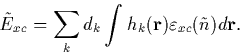
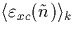
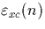
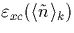
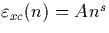
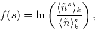
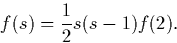
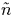
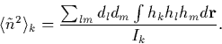

In the spin averaged case,
|  | (26) |
If hk is a Gaussian then the integrals are proportional to . To a first approximation, since  only varies slowly with n we can approximate this to , where
This approximation can be improved through some mathematical tricks, since we know that a highly accurate form for is given by  where s=0.30917 (see Eq. 2.5.19).
If we define
|  | (27) |
we can now do a limited expansion of this to give an approximation for f(s),
|  | (28) |
This step is one of the largest approximations within our method, leading to errors of up to 10%; however in practise its contribution to the total energy is minute and so the approximation is not unreasonable.
To find f(2) we need to know the second moment of , which can be determined analytically as
|  | (29) |
Finally substituting all of these new terms back in, we get an
expression for  :
: